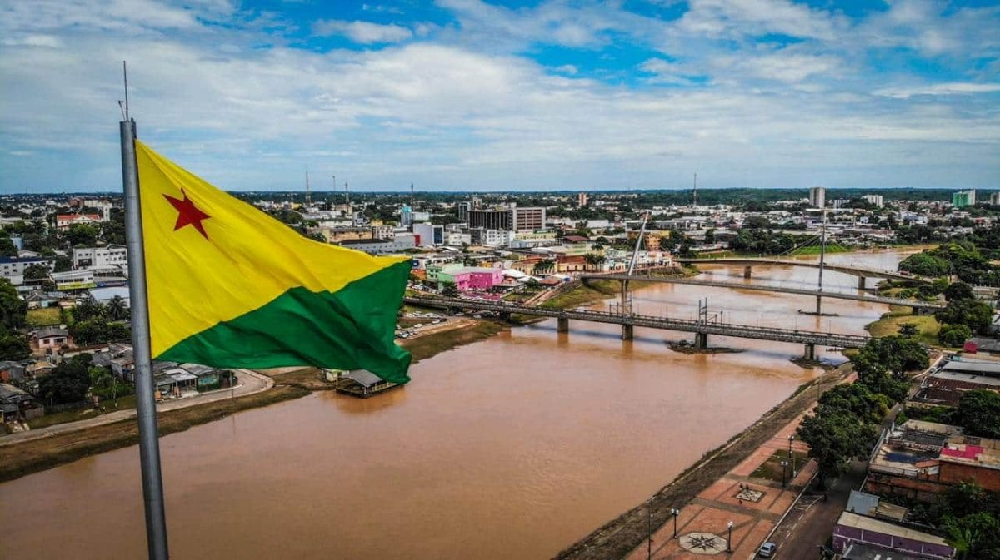

O Acre é um estado localizado na região Norte do Brasil, conhecido por sua grande área de floresta amazônica preservada. Sua capital, Rio Branco, concentra boa parte da população e das atividades econômicas locais. O estado possui forte influência indígena e seringueira, marcada pela história de luta ambiental liderada por Chico Mendes. A economia acreana depende principalmente do extrativismo, da agricultura e da pecuária. Além disso, o Acre faz fronteira com o Peru e a Bolívia, o que favorece relações culturais e comerciais internacionais.
